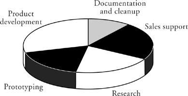
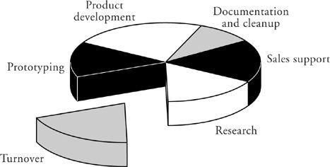

Turnover
Because most companies don’t capitalize their investment in people, they fail to note the dollar cost of their lost human capital due to turnover. They characterize their work in terms of its most important components, something like the graph at the top of the next page. When I ask the presenters, “Where is personnel turnover in this pie chart?” they look at me blankly. It isn’t anywhere in the chart. Or more precisely, it is distributed over all the slices in such a way as to remain invisible.

The pie charts used to show cost breakdown in your work may utilize different categories. But whatever they are, I bet turnover is not among them. That’s a shame, because if it were shown explicitly, I believe it would be so large as to jar your thinking:

When we measure human capital carefully and use the measurements to give a cash quantification to personnel turnover, it often becomes the second or third largest cost category.
There is a substantial variation in turnover rates among companies. In comparative employment studies such as those published by the Institute of Electrical and Electronic Engineers, for example, companies whose turnover places them in the best third of the sample are experiencing less than half the turnover loss of those in the worst third.
Only by not thinking about this at all can you persist in the comfortable illusion that overtime extracted from employees will have no effect on turnover. When companies conduct exit interviews of their departing employees, overtime is a frequently cited cause of the departure. When people feel used, when the fragile balance of their lives is upset by increasing pressure on their families, they’d be crazy not to think of moving on. Many of them do. For example, in Soul of a New Machine, the retrospective of Data General’s overtime-intensive Eagle Project, the author, Tracy Kidder, reports that every single member of the Eagle team was gone within a month of the end of the project. Even those who stayed on till the end (and many didn’t) were unwilling to continue working for the kind of company that had so used them.